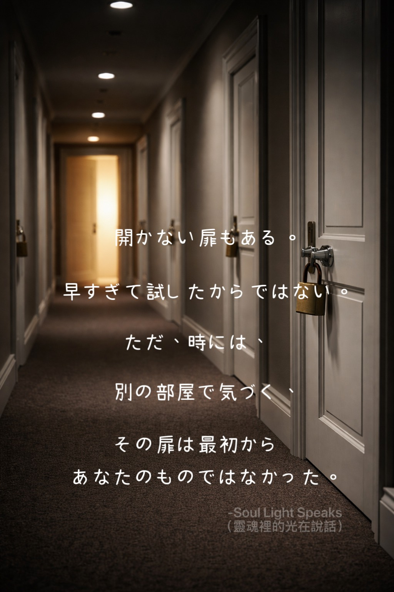
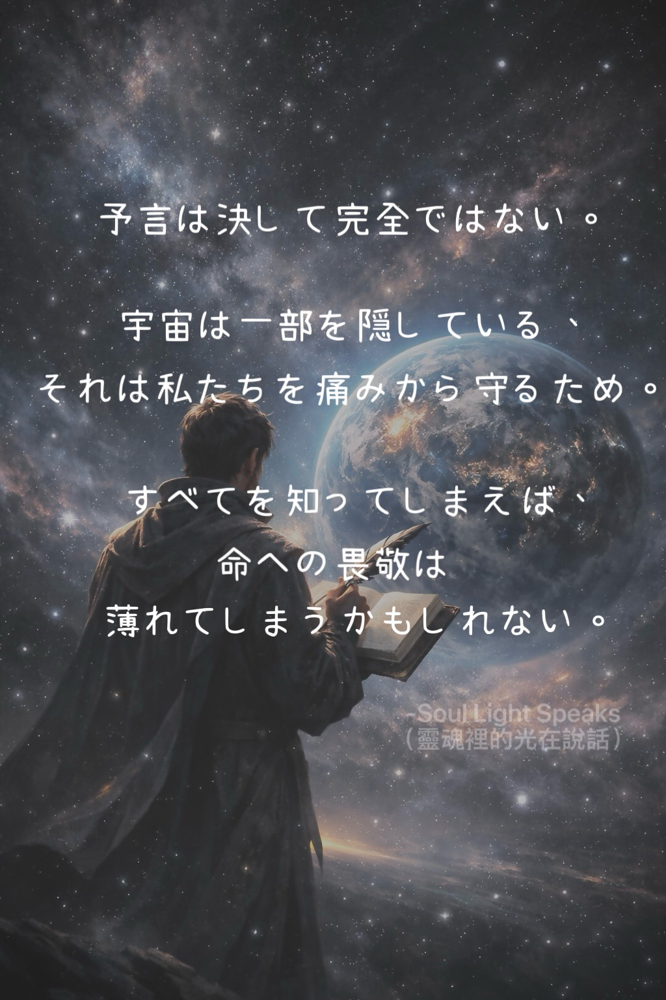
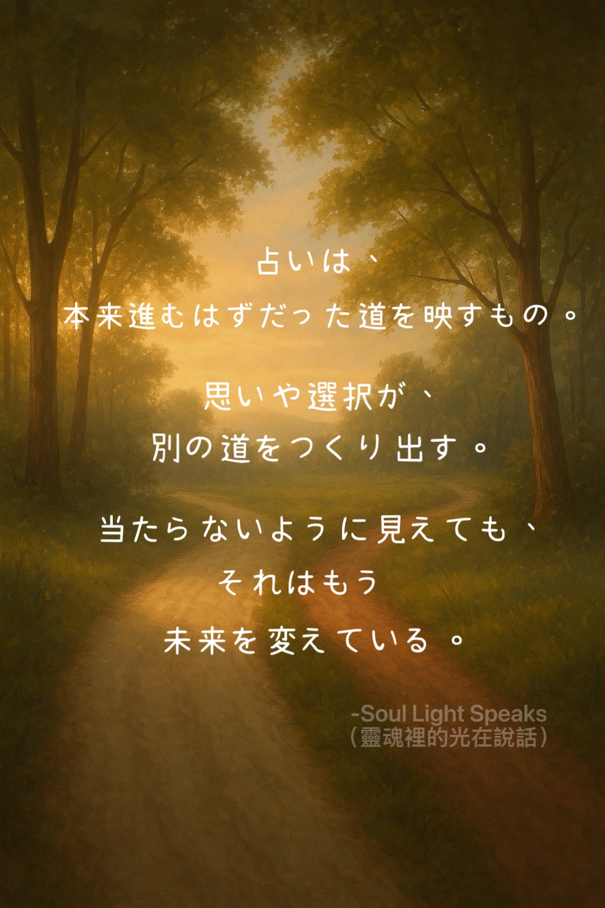
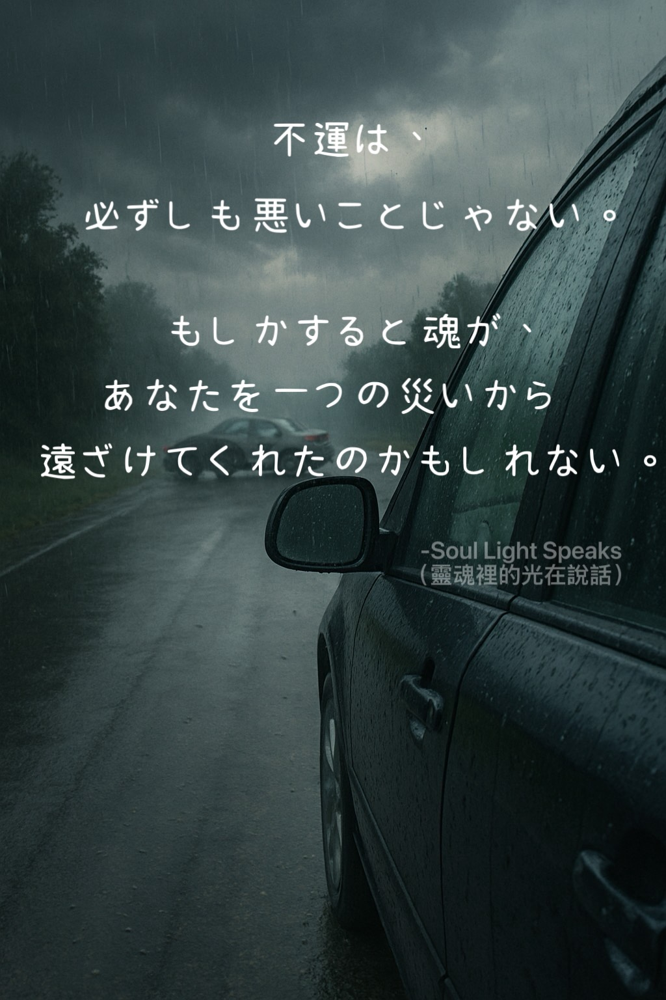

時間は過ぎていくものではない。 魂を前へと進める流れ。

開かない扉もある。早すぎて試したからではない。ただ、時には——別の部屋で気づく、その扉は最初からあなたのものではなかった。

予言は決して完全ではない。宇宙は一部を隠している、それは私たちを痛みから守るため。すべてを知ってしまえば、命への畏敬は薄れてしまうかもしれない。

占いは、本来進むはずだった道を映すもの。思いや選択が、別の道をつくり出す。当たらないように見えても、それはもう未来を変えている。

不運は、必ずしも悪いことじゃない。もしかすると魂が、あなたを一つの災いから遠ざけてくれたのかもしれない。